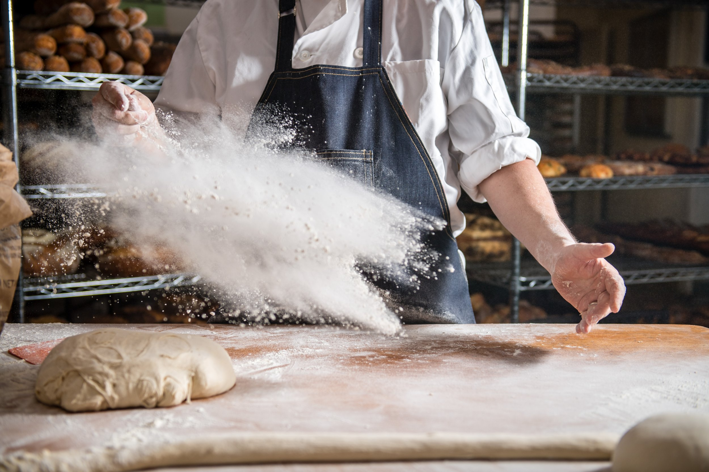

AboutUs
Story Behind PP Bakery
PP Bakery, nestled in the heart of town, has been a beloved community institution for over three decades. Its story began when Mr. Pang, inspired by his mother’s baking, decided to turn his passion into a business. After years of perfecting his recipes, he opened PP Bakery, named after his family’s initials, with a focus on high-quality, freshly baked bread. Starting with classic loaves and soft buns, the bakery quickly gained a loyal following thanks to the irresistible aroma of fresh bread that filled the streets. What set PP Bakery apart was its strong connection to the community. Mr. Pang created specialty loaves for local festivals, such as Pandan Coconut Loaves for the Mid-Autumn Festival and Durian Cheese Bread during durian season, celebrating local flavors. The bakery became a hub for the community, where people gathered not just to buy bread but to share stories and celebrate life’s moments. Mr. Pang often donated bread to local charities and mentored aspiring bakers, believing that bread brought people together. As his children joined the business, they introduced modern variations while preserving their father’s core values. Today, PP Bakery remains a testament to passion and community, symbolizing togetherness through the simple joy of sharing freshly baked bread made with love.
